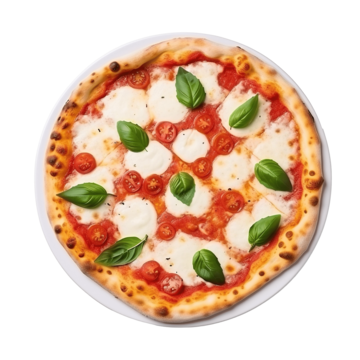
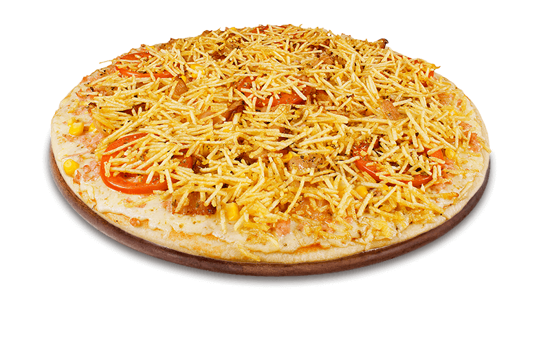
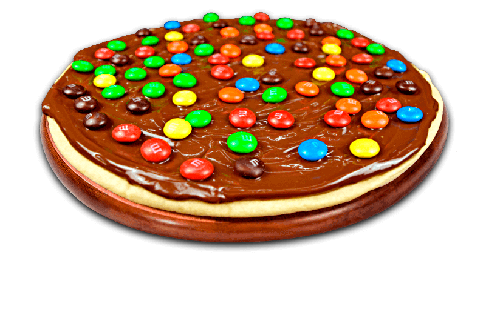

Bem-vindos!
Prepare-se para uma noite cheia de diversão, amigos, vinho e, claro, muita pizza!
Pizzas Salgadas




Pizza Doce

Lista de Ingredientes
(1) Massa
- 1 copo e 1/2 de água morna (total de 360 ml)
- 3 colheres de sopa de leite em pó
- 4 e 1/2 xícaras de farinha de trigo
- 2 colheres de chá de fermento biológico instantâneo
- 1 colher de chá de sal
- 2 colheres de sopa de óleo
- 1 colher de sopa de açúcar
- 1/2 xícara de óleo para untar a forma de pizza
Ingredientes para Uso Geral
- Farinha
- Fermento
- Ovo
- Oregano
- Queijo (Muito Queijo)
- Molho de Tomate
- Cebola
- Sal / Pimenta / Temperos
Sabores das Pizzas
Pizza Calabresa
- Calabresa
Pizza Carne
- Carne
- Batata Palha
Pizza Marguerita
- Tomate
- Manjericão
Pizza Corn and Bacon
- Milho
- Bacon
Pizza Doce
- MUMU
- M&M's